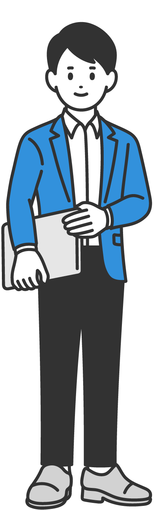
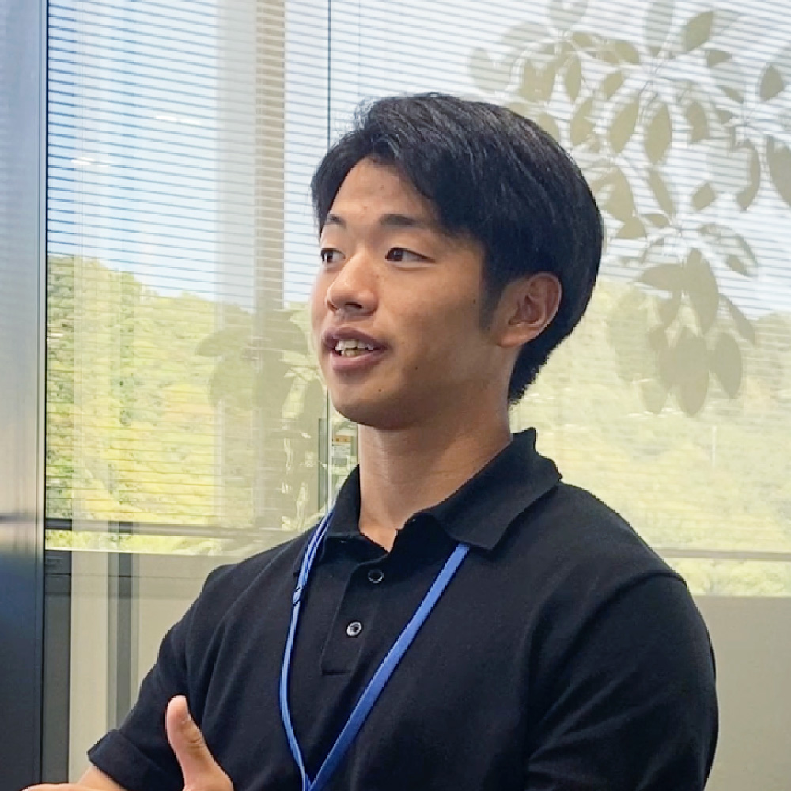

地元に還元したい。

防府営業所
2026年入社（新卒）
建材営業
K.Bさん

インタビュー
仕事内容
建材営業を担当している
入社の経緯や決め手
地元に還元できる仕事
福岡県で行われていた就活イベントに参加したことがきっかけで三和と出会いました。参加企業10社の中で、山口県を拠点としていたのは三和だけでした。
地元は山口県宇部市であり、以前から三和のことは知っていました。しかし、イベントで礒部さんと会話する中で、三和が地元に根付いた会社であることを実感しました。その結果、地元で働くビジョンが具体的に浮かび、入社を決めました。
もともとはホテル業界を含めて6社から内定をいただいており、県外企業も選択肢にありました。当時は営業職で働きたいという思いはあったものの、山口県で働くことへのこだわりはありませんでした。しかし、地元に還元できる仕事ができることが最も大きな決め手となりました。
入社前に感じた印象と入社後のギャップ
ノルマと成果主義
だけどフランクな環境
入社前は建材業界そのものに対して特別なイメージは持っておらず、山口県内で知名度の高い企業という印象でした。
実際に入社してみると、良い意味でのギャップが多くありました。もともとはノルマや成果主義のある環境に魅力を感じていましたが、実際には想像していたような堅い雰囲気ではありませんでした。BtoBの仕事でありながら、メーカーや工務店との距離が非常に近く、フランクな会話が多い環境であると感じています。
働き方について
若手にも
チャンスがある職場
仕事をしていると怒られることもあります。しかし、怒られたことそのものについて考え続けるのではなく、その状況を分析し、なぜそうなったのかという原因を見つけることが大切だと考えています。原因を理解し、解決していくことが成長につながります。
入社後1か月ほどで現場に出る機会があり、若手にもかなりの裁量権が与えられています。最初は先輩社員の取引先に同行しますが、お客様との関係性が築けるようになると、自分で担当を任せてもらえるようになります。
社風について
何でも相談できる、
風通しの良い職場
三和はノルマに対するペナルティがあまりない会社です。また、上司との距離が非常に近いと感じています。
社長と飲みに行く機会もあり、上下関係はあるものの、部長や社長とも気軽に話せる環境があります。同期とは研修を通じて関わる機会が多く、それぞれが良い個性を持っています。普段はそれぞれの個性を発揮しながらも、仕事になるとしっかり結束することができます。分からないことを聞きやすく、お互いがお互いのために行動できる関係性ができていると感じています。
学生時代の経験で現在活かされていること
チームワークが、
仕事の力になる
チームで動く意識です。
三和には県内に多くの営業所があり、それぞれ異なる課題を抱えています。その中で、周囲を頼る場面もあれば、自分が頼られる場面もあります。また、自分が主体となって動く時もあれば、サポート役に回る時もあります。学生時代に培った結束力やチームワークの意識が現在の仕事にも活かされています。
就活生へのアドバイス
どんな経験も、
未来の自分につながる
自身としては特別な就活のアドバイスはなく、流れの中で今の仕事にたどり着いたという感覚があります。
現在は休日に大学の部活動の監督をしており、学生と関わる機会が多いです。その中で、やりたいことがないという学生も多いと感じています。そのため、自分の趣味や興味のあることなど、やりたいと思ったことはとにかくやっておくと良いと思います。どのような経験も良い経験となり、社会人になってから意外なところで役に立つことがあります。
今後のビジョンやキャリアプラン
目の前の仕事に、
全力で向き合う
入社前は、自分自身の市場価値を上げることを重視していました。しかし入社後は、目の前の現場やお客様を幸せにすることが重要だと考えるようになりました。
現在は、今目の前にある仕事に精一杯向き合っていきたいと考えています。
休日の過ごし方
海沿いの景色を、
休日のごほうびに
休日はドライブをすることが多いです。山口県は自然が豊かであり、海沿いを走ることを楽しんでいます。海沿いにはカフェが並んでいる場所も多く、下関のカフェを巡ったり、唐戸市場で寿司を食べたりして過ごしています。
山口県の魅力
海も山も楽しめる、
豊かな暮らし
山口県は暮らしやすい場所だと感じています。田舎すぎず、都会すぎない点が魅力です。また、冬はスキー、夏は海や山など、四季を通じて自然を楽しむことができます。海も山も身近にあることが大きな魅力です。
就活生へのメッセージ
若手から挑戦し、
成長できる会社
三和は若手にも裁量権が与えられているため、自分主体で仕事を進めたい人や企画に挑戦したい人に向いている会社だと思います。また、地元に根付いた働き方ができることも魅力です。自分の働きが成果に直結するため、成長できる企業であると感じています。
タイムスケジュール
営業マンの1日
タイムスケジュールを見る
| 08:00 | 出社＆朝礼 |
|---|---|
| 10:00 | 現場確認 |
| 11:00 | 配送段取り |
| 12:00 | 昼食 |
| 13:00 | 資材の訪問提案 |
| 15:00 | 見積作成 |
| 17:00 | 退社 |
経営管理課 課長の普通の1日
タイムスケジュールを見る
| 08:00 | 出社＆メールチェック |
|---|---|
| 10:00 | 伝票＆各書類チェック |
| 12:00 | 昼食 |
| 13:00 | 来客対応 |
| 15:00 | 各種打ち合わせ |
| 17:00 | 退社 |
経営管理課 課長のアクティブな1日
タイムスケジュールを見る
| 08:00 | 出社＆メールチェック |
|---|---|
| 10:00 | 銀行訪問 |
| 11:00 | 顧問会計事務所で打ち合わせ |
| 12:00 | 昼食 |
| 13:00 | リクルート対応 |
| 15:00 | 社内打ち合わせ |
| 17:00 | 退社 |